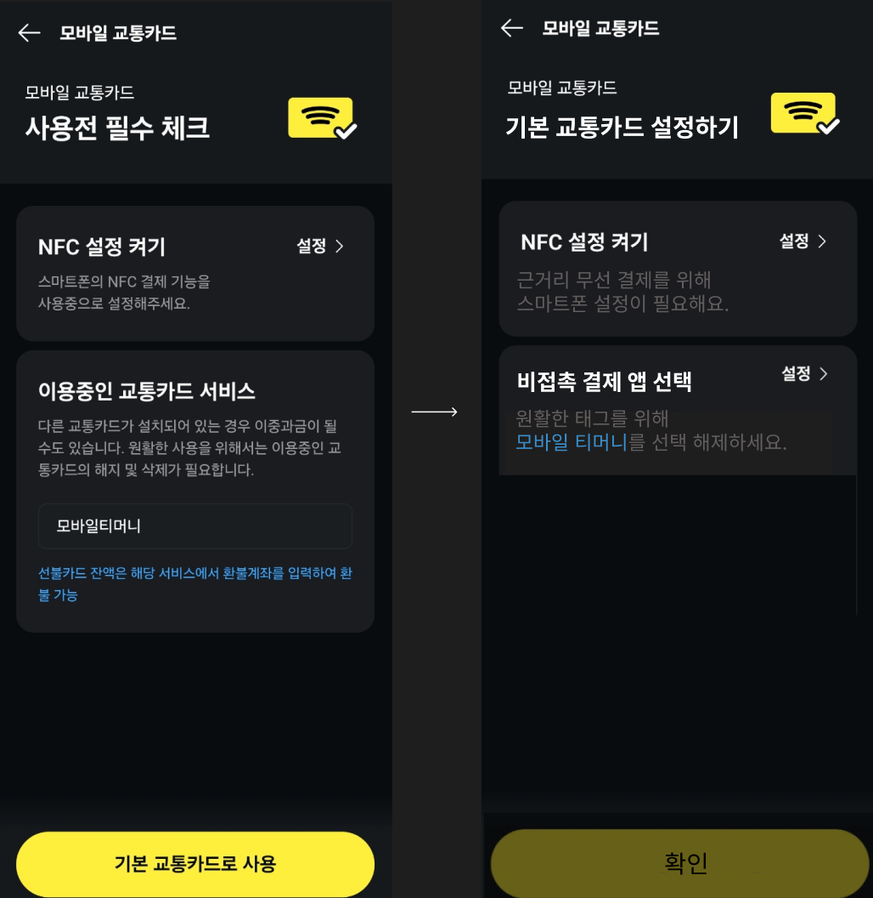

UX라이팅 스터디_ 카카오페이를 기본교통카드로 설정 유도

상황 및 목표
🔗기본 교통카드
: 교통카드 사용 시 앱 실행 필요 없이 화면이 꺼진 채로 교통단말과 태깅만 하면 되는 기능
미설정시에는
유저가
모바일 교통카드 태그시 매번 교통 카드 팝업을 클릭 해야하는 불편함이 발생
1
이에 카카오페이를 기본 교통카드로 설정하도록 유저 수준과 보이스톤을 고려해 라이팅으로 유도해야하는 상황
2
화면 목표 : 교통카드 태그시 핸드폰을 매번 꺼내야하는 불편함 해소를 위한 기본 교통카드 설정 지시
라이팅 목표 : 간결하고, 분명한 라이팅을 통한 유저 사용성 개선
섹션
본문1
(역할) 디바이스 모바일 결제 기능 활성화
(구조) ~를 위해 ~가 필요해요
(사유) NFC, 근거리 무선 결제 병기
NFC, RFID, 블루투스⊂근거리무선결제
NFC 단어에 대한 유저의 의견?
(액션) 스마트폰 설정
스마트폰, 디바이스 설정? 예고
CTA
(역할) 기본교통카드 설정 상태 확인
본문1,2로 이미 기능 설정은 완료
(문구) 기본 교통카드로 사용 → 확인
(예측) 설정 미완료시 잠금화면
불필요한 유저의 클릭 방지
5
본문2
(역할) 단독 교통카드 결제 기능 설정
(구조) ~가 필요합니다 → ~하세요
편의 기능 : 지시 + 적당한 예의
(사유) 원활한 태그로 단일화
3
"앱 실행 필요없이... 꺼진채로" → 원활한
태깅(개발자, 마케터 언어) → 태그
(액션) 해지 및 삭제 → 선택 해제
선택 해제라는 유연한 방법으로 변경
1,4
유지시 백그라운드 전력소모 지적
5
타이틀 및 전체 정리
(역할) 기본 교통카드 설정 유도
단순 체크 X → 기능 설정
(문구) 필수 체크 → 설정하기
(어미) 하기, 켜기, 선택으로 동작 어미 일치
(디자인) 양식 통일을 위한 사용
더욱 흔한 NFC 표시 사용
본문1,2를 동시에 포함하는 이미지
각주
1
사진
2
카카오페이 보이스 : 믿음직하게, 친근하게, 쉽게 | 유저 수준 : 연령, 경험 수준 불문
3
이중 과금이 : 실제 가능성 ↓ | 될수도 : 카카오페이의 "믿음직하게" 보이스톤 파괴
4
사진
5
사진
QnA
"하기"는 다짐의 늬앙스로 보통 버튼에 사용, 그런데 타이틀에 쓴 이유? - 어미 일치 및 액션 유도 분명화
모바일 교통카드 중복을 지우지 않은 이유? - 다른 페이지 양식 일치
변경안에 대한 유저 반응 계획은? - 캐주얼 UT | ex)친구들, 블로그 유저
관련 레퍼런스 스터디한 서비스는? - 삼성페이 교통카드, 티머니, 토스 교통카드